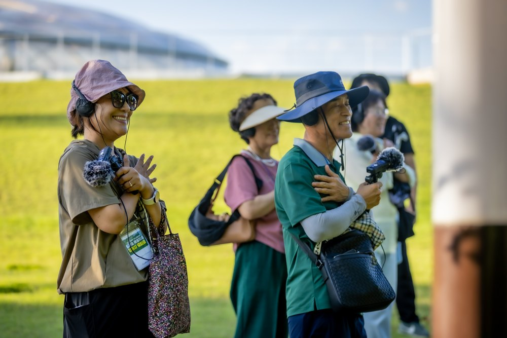
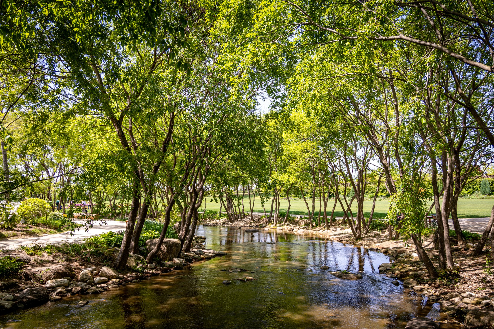
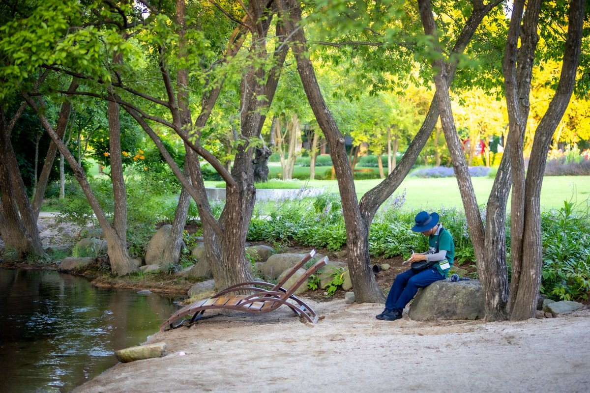
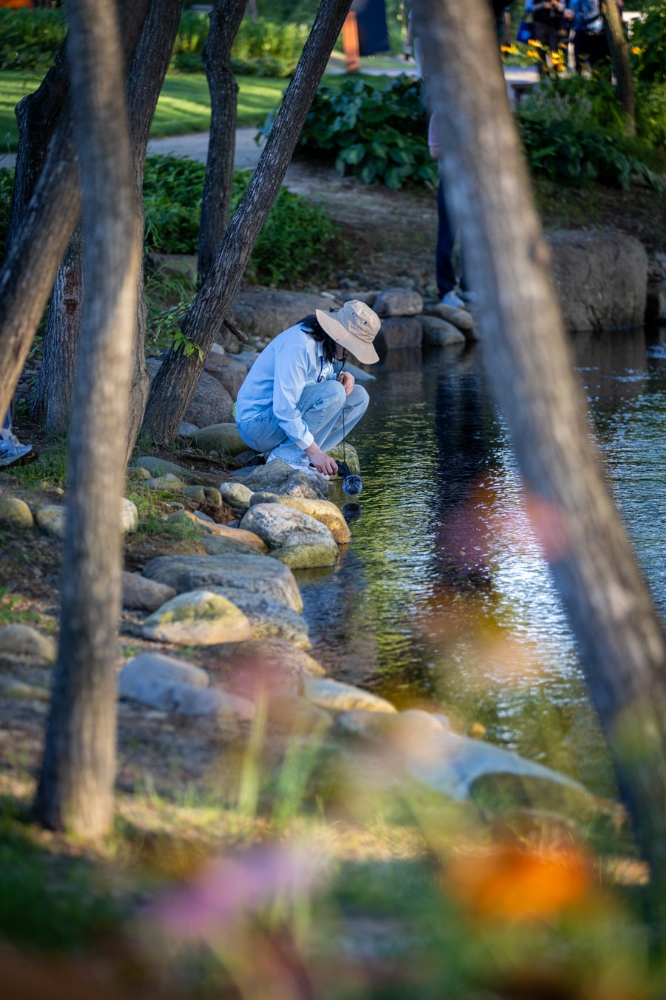
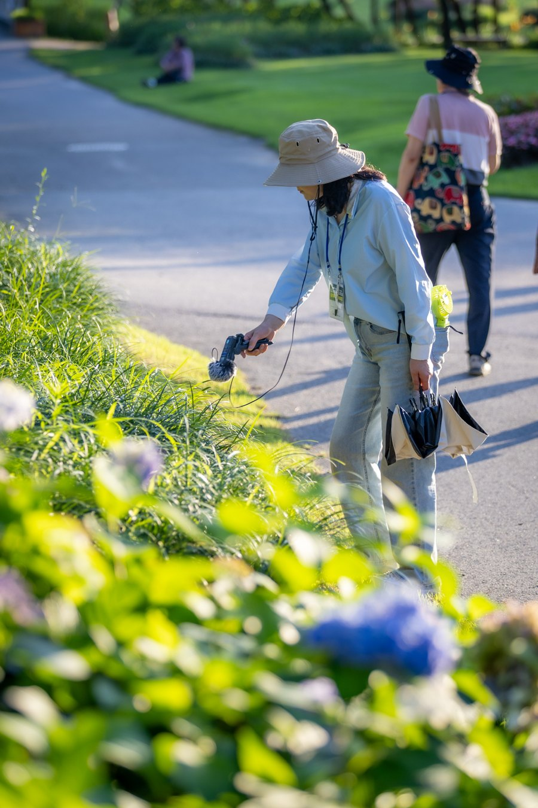

01
천천히 걷기
숲 속을 거닐며 걸음의 속도를 늦춥니다.
오늘의 풍경과 나의 감각을 살펴봅니다.

MYEONGWOL · SOUNDS OF THE GARDEN
고요 속 나를 비추다
숲에 머물고, 소리에 귀 기울이다
이어폰을 끼고, 편안한 볼륨으로 들어보세요.
ABOUT MYEONGWOL
명월(明月)은 숲을 걸으며 주변의 소리에 귀 기울이고,
떠오르는 감정과 생각을 자유롭게 기록하는
사운드워킹 프로그램입니다.
일상 속 쉼과 자기표현의 시간이 필요한 누구나.
걸음의 속도를 늦추고, 익숙한 풍경을 새롭게 만나보세요.

A WALK FOR YOURSELF
잘 듣거나 잘 표현하려 애쓰지 않아도 괜찮아요.
지금 느껴지는 감각을 천천히 따라가 보세요.

숲 속을 거닐며 걸음의 속도를 늦춥니다.
오늘의 풍경과 나의 감각을 살펴봅니다.

바람과 물, 가까이 혹은 멀리 들리는 소리.
마음이 향하는 소리에 귀 기울입니다.

소리를 들으며 떠오른 감정과 생각을
글이나 그림 등 나만의 방식으로 기록합니다.
A MOMENT OF STILLNESS
당신의 일상에 정원의 고요가 오래 머물기를.
다시, 정원의 소리로